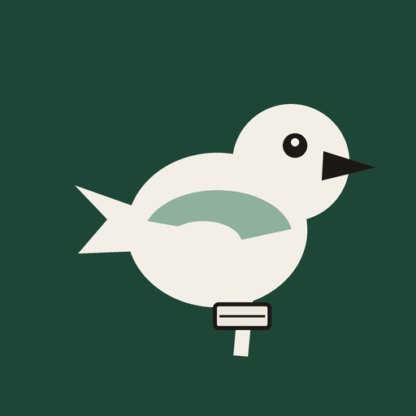

1x
Format 4:3, téléphone à l'horizontale. Le déclencheur ouvre l'appareil photo. Le zoom n'est pas lu.
Tourne le téléphone à l'horizontale.

BirdFile1x
Format 4:3, téléphone à l'horizontale. Le déclencheur ouvre l'appareil photo. Le zoom n'est pas lu.
Tourne le téléphone à l'horizontale.